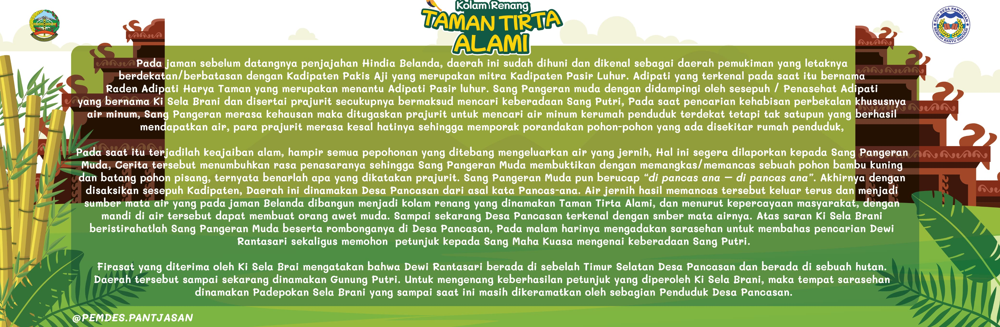
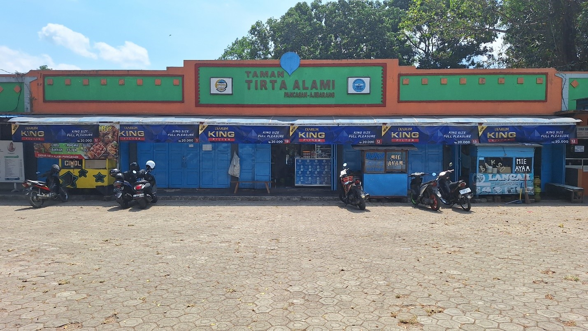
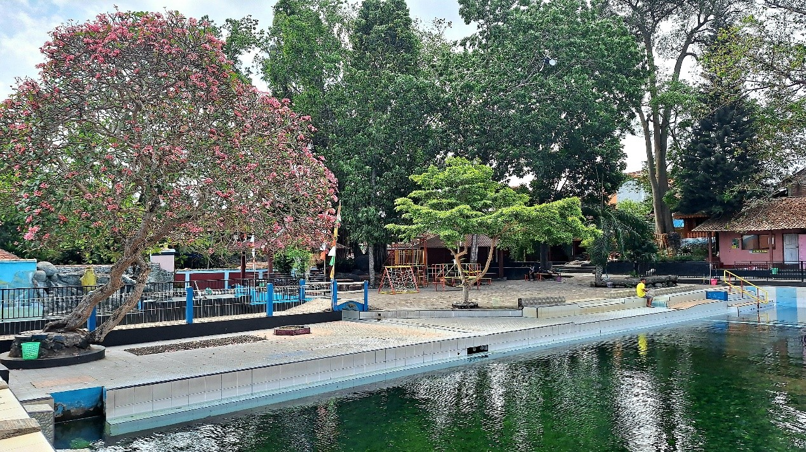
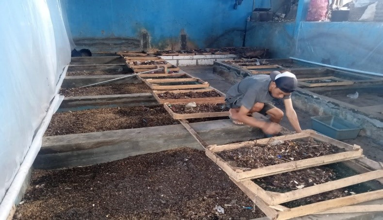
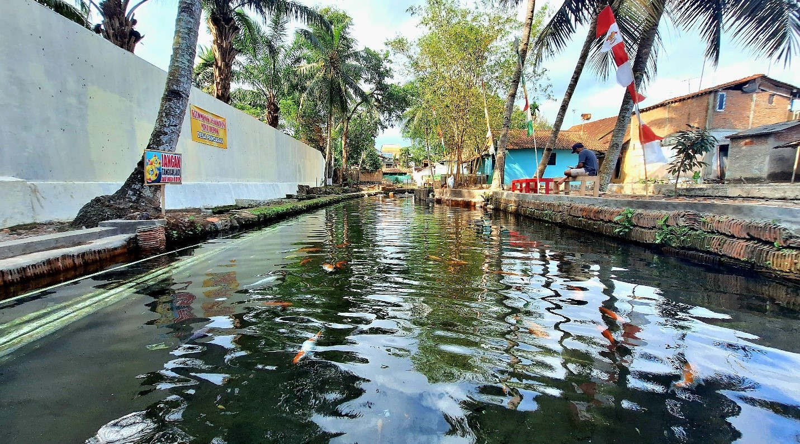
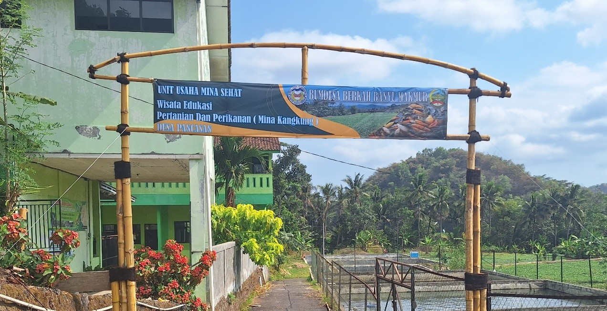

Sejarah

Pada legenda itu diceritakan bahwa pada masa sebelum datangnya penjajahan Hindia Belanda, daerah ini sudah dihuni dan dikenal sebagai daerah pemukiman yang letaknya berbatasan dengan Kadipaten Pakis Aji yang merupakan mitra Kadipaten Pasir Luhur.
Adipati yang terkenal pada saat itu bernama Raden Adipati Harya Taman yang merupakan menantu Adipati Pasir luhur.
Alkisah pada suatu hari Kadipaten Pakis Aji kedatangan salah satu pangeran muda dari kerajaan di Tanah Jawa dengan tujuan utamanya meminang salah satu putri Adipati Harya Taman yang bernama Dewi Rantansari.
Dengan rasa hormat dan takut sang adipati langsung menerima pinangan dari sang pangeran muda.
Namun, ternyata sang putri menolak pinangan tersebut dan meninggalkan Kadipaten Pakis Aji, sehingga marahlah sang pangeran muda.
Sang pangeran muda dengan didampingi oleh penasehat adipati yang bernama Ki Sela Brani disertai prajurit secukupnya
bermaksud mencari keberadaan sang putri. Pada saat pencarian mereka kehabisan perbekalan khususnya air minum.
Sang pangeran merasa kehausan maka ditugaskanlah para prajurit untuk mencari air minum ke rumah penduduk terdekat
tetapi tak satu pun yang berhasil mendapatkan air sehingga sambil menahan marah dan haus sang pangeran muda berucap
“Ajining banyu ajining barang” maka terjadilah nama Ajibarang sebagai pengganti Kadipaten pakis Aji.
Sang pangeran muda meneruskan perjalanannya ke arah selatan kurang lebih berjarak 1 km dari Ajibarang.
Sang pangeran muda kembali menugaskan para prajurit untuk mencari air minum ke rumah penduduk, tetapi penduduk ketakutan dan lari.
Para prajurit merasa kesal hatinya sehingga memporak-porandakan pohon-pohon yang ada di sekitar rumah penduduk.
Pada saat itu terjadilah keajaiban alam, hampir semua pepohonan yang ditebang mengeluarkan air yang jernih.
Hal ini segera dilaporkan kepada sang pangeran muda. Cerita tersebut menumbuhkan rasa penasaran sang pangeran muda,
sehingga ia membuktikan dengan memangkas atau memancas sebuah pohon bambu kuning dan batang pohon pisang yang ada di dekatnya.
Ternyata benarlah apa yang dikatakan prajurit. Sang pangeran muda pun berucap “di pancas ana–di pancas ana”.
Akhirnya dengan disaksikan sesepuh kadipaten, daerah ini dinamakan Desa Pancasan dari asal kata Pancas-ana.
Geografis

Desa ini memiliki topografi berupa dataran rendah dengan ketinggian antara 20-180 meter di atas permukaan air laut.
Kemiringan lahan menurun dari utara ke selatan serta diapit oleh dua buah sungai, yaitu Sungai Tajum di sebelah
barat dan Sungai Datar di sebelah timur. Desa Pancasan memiliki mata air alami yang begitu banyak.
Sebagian besar mata air berada di sebelah selatan yang lebih rendah secara topografinya.
Ada sekitar dua puluh mata air yang di manfaatkan penduduk sebagai sumber air bersih dan keperluan mandi serta mencuci.
Beberapa diantaranya diberi nama yang unik seperti Kali Lanang (khusus untuk laki-laki yang dalam bahasa jawa lanang) dan Kali Wadon (wadon=wanita).
Wisata
Desa Wisata Pancasan adalah sebuah desa wisata dengan tema Eduwisata Berbasis Circular Economy.
Desa Pancasan merupakan salah satu desa yang terletak di Kecamatan Ajibarang Kabupaten Banyumas Provinsi Jawa Tengah.
Desa Pancasan berjarak sekitar 20 km atau 30 menit dari Ibukota Kabupaten Banyumas. Rute menuju Desa Pancasan dapat dilalui dengan menggunakan Angkutan Umun ( Bus Transportasi ).
Jumlah penduduk di Desa Pancasan yaitu sebanyak 8.075 jiwa. Pengembangan Desa Wisata Pancasan dimulai pada Tahun 2022.
Model Pengembangan desa wisata yang dikerjakan menggunakan
model kerangka hexa holix yaitu melibatkan stakeholder diantaranya adalah Dinas Pemerintah terkait, Perguruan Tinggi,
Dunia Usaha / Swasta, Masyarakat Desa dan Media Sosial.
Atraksi atau daya tarik yang dimiliki Desa Wisata Pancasan yaitu:
1. Kolam Renang Taman Tirta Alami

Kolam renang ini sudah ada pada zaman penjajahan Belanda. Menurut Legenda mata air yang ada dikolam ini merupakan cikal bakal terjadinya nama desa Pancasan.
Dan kolam ini sekarang merupakan salah satu usaha yang dikelola oleh BUMDes Pancasan sejak 2017 hingga saat ini. Daya tarik dari kolam ini yaitu air yang berasal
langsung dari sumber mata air yang dipercaya jika mandi di kolam ini akan menjadi awet muda dan menyehatkan.
2. Eduwisata Pengolahan Sampah

Obyek pertama yang dikembangkan adalah Unit Usaha Pengolahan Sampah yang dikelola oleh BUMDesa.
Dengan difasilitasi oleh Dinas Lingkungan Hidup unit ini didirikan sebagai media edukasi pengolahan sampah yang mampu mengolah
sampah menjadi sesuatu yang bernilai ekonomi dan bermanfaat bagi Masyarakat serta mewujudkan lingkungan yang sehat, bersih dan nyaman untuk dihuni.
Dari pengolahan sampah ini menghasilkan maggot BSF sebagai sumber bahan baku pembuatan pakan ikan yang digunakan oleh unit
usaha perikanan BUMDesa dan para POKDAKAN di desa, Kasgot sebagai pupuk organic dibidang pertanian, dan minyak destilasi sampah
plastik yang digunakan sebagai pelumas alat pres genteng oleh pengrajin genteng di desa pancasan.
Diantara sebagian unsur diatas yang tidak kalah pentingnya yaitu untuk melindungi sumber mata air yang ada di desa kami.
Sumber mata air bersih yang ada digunakan oleh warga desa Pancasan dan juga warga di desa - desa yang lain.
3. Eduwisata Kali pagak

Obyek wisata yang dikembangkan selanjutnya yaitu Wisata Kali Pagak. Kali pagak adalah sungai yang tercipta dari sumber
mata air dan terletak di Tanah Kas Desa yang terhubung langsung dengan Kolam Renang Taman Tirta Alami Pancasan.
Dengan difasilitasi oleh Dinas Perikanan, Dinas Lingkungan Hidup serta DINPORABUDPAR wisata ini menjadi media pembelajaran
tentang kepedulian lingkungan, Sejarah dan juga budidaya ikan. Kali Pagak ini dimanfaatkan untuk tempat budidaya ikan air
deras yang dikelola oleh kelompok perikanan sebagai tempat edukasi budidaya ikan dan pengetahuan tentang jenis ikan lokal
yang ada di Sungai kali pagak serta mengajarkan tentang pelestarian lingkungan dan juga mengenal sejarah tentang asal mula
desa Pancasan karena letaknya terhubung langsung dengan Situs Ki Sela Brani.
4. Eduwisata Mina Kangkung

Obyek wisata yang dikembangkan selanjutnya yaitu Eduwisata Mina Kangkung. Objek wisata ini terletak di Tanah Kas Desa yang dikelola oleh kelompok pertanian sebagai lahan pertanian kangkung air dari zaman nenek moyang. Dengan difasilitasi oleh Dinas Pertanian dan Dinas Perikanan wisata ini menyuguhkan pembelajaran tentang pertanian dan perikanan mina kangkung. Di wisata ini akan dibangun pasar ikan sebagai sentra penjualan hasil perikanan warga, dan juga menjadi sentra kuliner hasil olahan ikan dan pertanian kangkung. Wisata ini terhubung dengan Sungai Datar yang akan menjadi wisata river tubing. Obyek eduwisata ini terhubung juga dengan lahan pertanian organik dengan luas sekitar 20 ha yang merupakan Tanah Kas Desa ( TKD ).